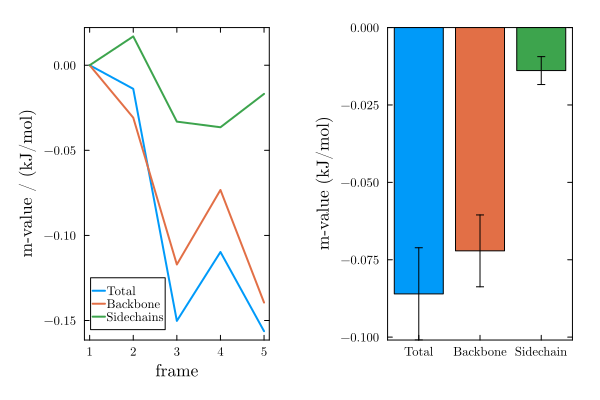

Protein transfer free energy calculator
This is an experimental feature. Breaking changes may occur without a breaking package release.
Transfer free energies throughout a simulation
PDBTools.transfer_free_energy — Method
transfer_free_energy(
sim::Simulation,
cosolvent="urea";
model=PDBTools.AutonBolen,
protein::AbstractVector{<:PDBTools.Atom}=PDBTools.select(get_atoms(sim), "protein and not elmement H"),
backbone::Function=PDBTools.isbackbone,
sidechain::Function=PDBTools.issidechain,
reconstruct_protein::Bool=true,
)Calculates the transfer free energy (in kcal/mol at 1M cosolvent) averaged over all frames of sim, using the Tanford transfer model.
If reconstruct==true, at each frame the protein structure is reconstructed to account for periodic boundary conditions before computing the SASA-based transfer free energy via PDBTools.transfer_free_energy.
Positional arguments
sim:Simulationobject.cosolvent: cosolvent name (case insensitive). One of:"betaine","proline","sarcosine","sorbitol","sucrose","tmao","urea","urea-app","urea-mh". Default:"urea".
Keyword arguments
model: thermodynamic model. EitherPDBTools.AutonBolen(default) orPDBTools.MoeserHorinek.protein: vector of protein atoms. Defaults to all non-hydrogen protein atoms insimselected by"protein and not element H".backbone: function that identifies backbone atoms. Default:PDBTools.isbackbone.sidechain: function that identifies side-chain atoms. Default:PDBTools.issidechain.reconstruct_protein: boolean to define if the protein structure must be reconstructed to avoid PBC artifacts. Defaults totrue.
Returns
A PDBTools.TransferFreeEnergy object with the frame-averaged values:
nres::Int: number of residues considered.tot::Float32: total transfer free energy (kcal/mol/M).bb::Float32: backbone contribution (kcal/mol/M).sc::Float32: side-chain contribution (kcal/mol/M).residue_contributions_bb::Vector{Float32}: per-residue backbone contributions.residue_contributions_sc::Vector{Float32}: per-residue side-chain contributions.cosolvent::String: the cosolvent used.
Example
julia> using MolSimToolkit, MolSimToolkit.Testing
julia> sim = Simulation(Testing.namd_pdb, Testing.namd_traj)
julia> tfe = transfer_free_energy(sim, "urea")
julia> tfe.tot # total transfer free energy averaged over framesReferences
- Auton & Bolen: https://doi.org/10.1016/s0076-6879(07)28023-1 and https://www.pnas.org/doi/10.1073/pnas.0706251104
- Moeser & Horinek: https://doi.org/10.1021/jp409934q
MolSimToolkit.transfer_free_energy_frames — Function
transfer_free_energy_frames(
sim::Simulation,
cosolvent="urea";
model=PDBTools.AutonBolen,
protein::AbstractVector{<:PDBTools.Atom}=PDBTools.select(get_atoms(sim), "protein and not element H"),
backbone::Function=PDBTools.isbackbone,
sidechain::Function=PDBTools.issidechain,
reconstruct_protein::Bool=true,
)Calculates the transfer free energy (in kcal/mol at 1M cosolvent) for each frame of sim individually, using the Tanford transfer model. Unlike transfer_free_energy, which returns frame-averaged values, this function returns a TransferFreeEnergyFrames object containing one PDBTools.TransferFreeEnergy result per frame.
If reconstruct_protein==true, at each frame the protein structure is reconstructed to account for periodic boundary conditions before computing the SASA-based transfer free energy via PDBTools.transfer_free_energy.
Positional arguments
sim:Simulationobject.cosolvent: cosolvent name (case insensitive). One of:"betaine","proline","sarcosine","sorbitol","sucrose","tmao","urea","urea-app","urea-mh". Default:"urea".
Keyword arguments
model: thermodynamic model. EitherPDBTools.AutonBolen(default) orPDBTools.MoeserHorinek.protein: vector of protein atoms. Defaults to all non-hydrogen protein atoms insimselected by"protein and not element H".backbone: function that identifies backbone atoms. Default:PDBTools.isbackbone.sidechain: function that identifies side-chain atoms. Default:PDBTools.issidechain.reconstruct_protein: boolean to define if the protein structure must be reconstructed to avoid PBC artifacts. Defaults totrue.
Returns
A TransferFreeEnergyFrames object, which is an indexable and iterable collection of PDBTools.TransferFreeEnergy objects, one per simulation frame. Each element has the fields:
nres::Int: number of residues considered.tot::Float32: total transfer free energy (kcal/mol/M).bb::Float32: backbone contribution (kcal/mol/M).sc::Float32: side-chain contribution (kcal/mol/M).residue_contributions_bb::Vector{Float32}: per-residue backbone contributions.residue_contributions_sc::Vector{Float32}: per-residue side-chain contributions.cosolvent::String: the cosolvent used.
Example
julia> using MolSimToolkit, MolSimToolkit.Testing
julia> sim = Simulation(Testing.namd_pdb, Testing.namd_traj)
julia> tfe_frames = transfer_free_energy_frames(sim, "urea")
julia> tfe_frames[1].tot # total TFE of the first frame
julia> [ t.tot for t in tfe_frames ] # total TFE for each frameReferences
- Auton & Bolen: https://doi.org/10.1016/s0076-6879(07)28023-1 and https://www.pnas.org/doi/10.1073/pnas.0706251104
- Moeser & Horinek: https://doi.org/10.1021/jp409934q
The transfer_free_energy function computes the transfer free energy of a protein (in kcal/mol at 1M cosolvent), averaged over all frames of a simulation, using the Tanford transfer model:
using MolSimToolkit, MolSimToolkit.Testing
import PDBTools # to choose transfer model
sim = Simulation(Testing.namd_pdb, Testing.namd_traj)
tfe = transfer_free_energy(sim, "urea"; model=PDBTools.MoeserHorinek)PDBTools.TransferFreeEnergy{PDBTools.MoeserHorinek} - 43 residues to 1M "urea".
Total transfer free energy: -0.99409294 kcal mol⁻¹
Backbone contributions: -0.2626142 kcal mol⁻¹
Side-chain contributions: -0.73147875 kcal mol⁻¹Per-residue contributions are available in tfe.residue_contributions_bb and tfe.residue_contributions_sc.
To obtain the transfer free energy for each frame individually (rather than an average), use transfer_free_energy_frames. It returns a TransferFreeEnergyFrames object that supports indexing and iteration:
tfe_frames = transfer_free_energy_frames(sim, "urea"; model=PDBTools.MoeserHorinek)TransferFreeEnergyFrames{PDBTools.MoeserHorinek} with 5 frames (cosolvent: urea)
Total TFE (kcal/mol/M): min = -1.044 mean = -0.994 max = -0.927
Backbone (kcal/mol/M): min = -0.299 mean = -0.263 max = -0.220
Side-chain (kcal/mol/M): min = -0.756 mean = -0.731 max = -0.704tfe_frames[1].tot # total TFE of the first frame-0.9265288f0tot_per_frame = [ t.tot for t in tfe_frames ]5-element Vector{Float32}:
-0.9265288
-0.94350994
-1.0305104
-1.0258899
-1.0440257Note that the contributions of each residue, at each frame, are stored in tfe_frames[i].residue_contributions_bb (or _sc), for backbone and side-chains, and thus this array might require a significant amount of memory. But, for example, to obtain the contributions to the transfer free energies of a subset of the protein, at each frame, do:
tfe_10_15 = [
sum(t.residue_contributions_bb[10:15]) + sum(t.residue_contributions_sc[10:15])
for t in tfe_frames
]5-element Vector{Float32}:
-0.10752264
-0.12754151
-0.12697157
-0.12570404
-0.12352968Computing m-values
The m-value of a frame relative to a reference structure is the difference in transfer free energy between that frame and the reference. Using transfer_free_energy_frames together with a reference TFE computed for the first frame via PDBTools.transfer_free_energy, this is straightforward:
using MolSimToolkit, MolSimToolkit.Testing
import PDBTools
sim = Simulation(Testing.namd_pdb, Testing.namd_traj)Simulation
Atom type: PDBTools.Atom{Nothing}
PDB file: /home/runner/work/MolSimToolkit.jl/MolSimToolkit.jl/test/data/namd/protein_in_popc_membrane/structure.pdb
Trajectory file: /home/runner/work/MolSimToolkit.jl/MolSimToolkit.jl/test/data/namd/protein_in_popc_membrane/trajectory.dcd
Total number of frames: 5
Frames to consider: 1, 2, 3, 4, 5
Number of frames to consider: 5
Current frame: 1First, we compute TFE of the reference structure (first frame):
atoms = get_atoms(sim)
protein_ref = PDBTools.select(atoms, "protein and not element H")
tfe_ref = PDBTools.transfer_free_energy(protein_ref, "urea")PDBTools.TransferFreeEnergy{PDBTools.AutonBolen} - 43 residues to 1M "urea".
Total transfer free energy: -0.52879345 kcal mol⁻¹
Backbone contributions: -0.5210656 kcal mol⁻¹
Side-chain contributions: -0.007727891 kcal mol⁻¹Now, compute TFE for each frame of the trajectory:
tfe_frames = transfer_free_energy_frames(sim, "urea")TransferFreeEnergyFrames{PDBTools.AutonBolen} with 5 frames (cosolvent: urea)
Total TFE (kcal/mol/M): min = -0.685 mean = -0.615 max = -0.529
Backbone (kcal/mol/M): min = -0.661 mean = -0.593 max = -0.521
Side-chain (kcal/mol/M): min = -0.044 mean = -0.022 max = 0.009The m-values are difference in TFE between each frame and the reference
m = (
tot = [ t.tot - tfe_ref.tot for t in tfe_frames ],
bb = [ t.bb - tfe_ref.bb for t in tfe_frames ],
sc = [ t.sc - tfe_ref.sc for t in tfe_frames ],
)(tot = Float32[0.0, -0.0138860345, -0.15024257, -0.10973841, -0.15629327], bb = Float32[0.0, -0.030822158, -0.11709905, -0.07328683, -0.13946015], sc = Float32[0.0, 0.016936176, -0.03314352, -0.03645157, -0.01683312])Plotting the results, we obtain the $\Delta_{\textrm{ref}\rightarrow\textrm{target}}\Delta G^{T}$, the difference in transfer free energy from water to urea at 1M, of the target structure at each frame relative to the reference structure:
using Plots, Statistics
plt = plot(MolSimStyle, layout=(1,2))
plot!(plt, m.tot; label="Total", lw=2, sp=1)
plot!(plt, m.bb; label="Backbone", lw=2, sp=1)
plot!(plt, m.sc; label="Sidechains", lw=2, sp=1)
plot!(xlabel="frame", ylabel="m-value / (kJ/mol)", sp=1)
bar!(plt, [1 2 3],
[mean(m.tot) mean(m.bb) mean(m.sc)],
yerr=[std(m.tot)/5 std(m.bb)/5 std(m.sc)/5], # just illustrative
xticks=([1,2,3],["Total","Backbone","Sidechain"]),
sp=2, label="", xlabel="",
ylabel="m-value (kJ/mol)",
)
Thus, it seems that urea is favoring the evolution of the conformations of the protein in time (target structures have more negative transfer free energies than the reference structure) with the interactions with the backbone being more relevant than those of the sidechains. The errors are of course only illustrative.